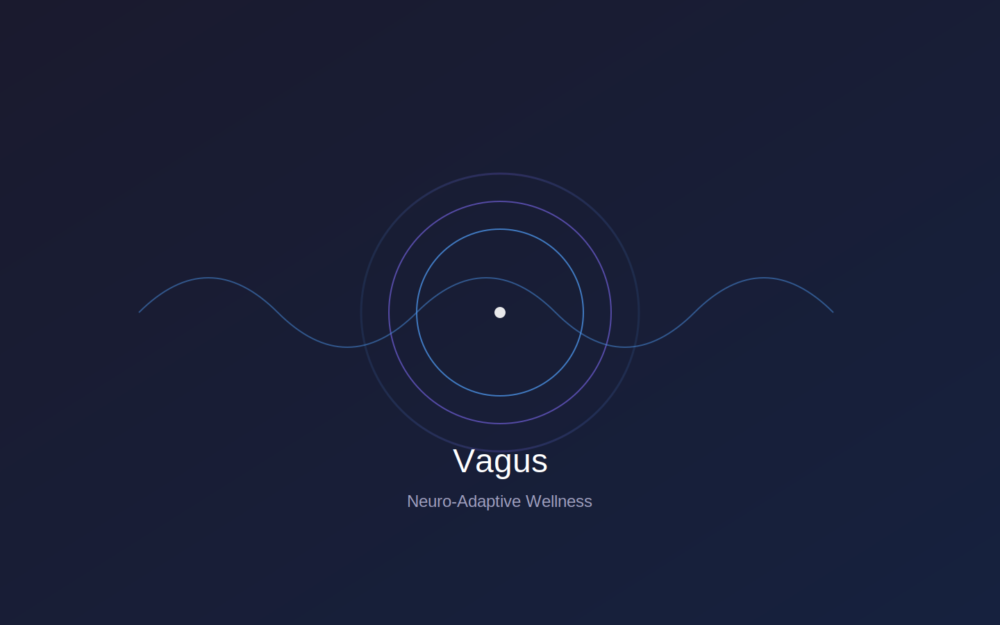
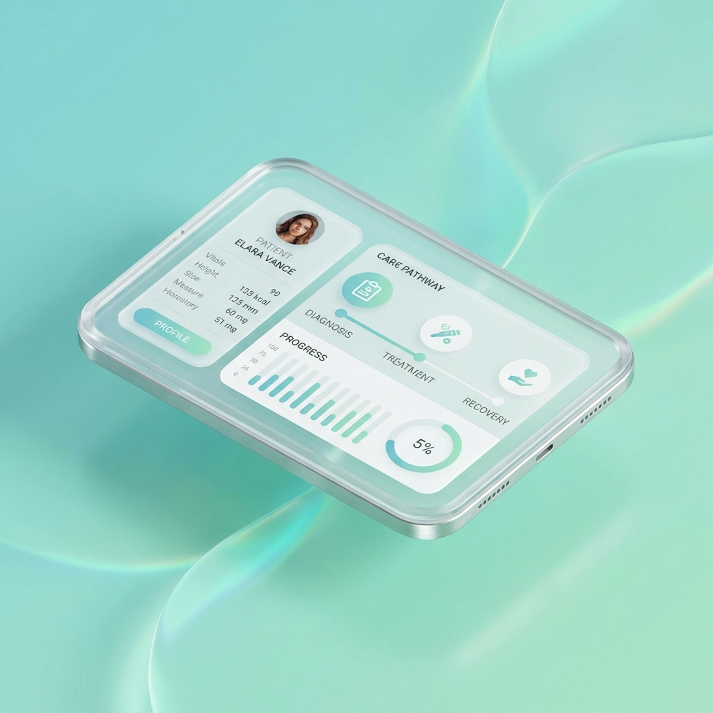
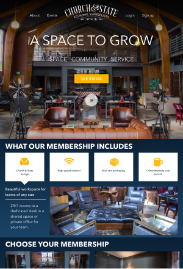

Jeff Sanders, Jr.
Strategic Product
Design Director.
Bridging business strategy with human-centered design.
LATEST WORK
Project Boomerang
The "Repo & Rehire" Engine

FOUNDER & DESIGNER
Vagus
Neuro-Adaptive Wellness Platform

MARKETPLACE
Coaching.com
One Platform for All Coaching
HEALTHCARE
Treatment Plans
Powering Mental Health Progress

MOBILE APP
Practice Test 3.0
Bridging the Gap for Young Drivers

COMMUNITY
Church & State
Incubating Community Entrepreneurs

Client Feeback

Jeff brings sheer talent to user experience and design. He has an eye
for detail and helped to move our implementations ahead of the curve. Jeff has a wide range of
skillsets including customer research, wire-framing, mockups, and he is highly skilled in building
and delivering the code for the solution.
Chief Technology Officer | Startup
Jeff has been very reliable, personable, and professional to work with.
He helped me develop my brand through website design, graphic design, and web development. He is a
creative rock star and also knows the technical development world.
Owner | Interior Design Business


My Philosophy
"I believe that design + technology should be used to enhance life, not to be its focus."
Clear experiences over unpredictability
As designer, our goal is not to eliminate complexity or friction, but
rather create a clear, intuitive and understandable product experience. At times, this may mean adding
thoughtful complexity.
Consistently challenge our own assumptions
It’s easy to become overconfident in our ideas and opinions. Rigorous
iteration and testing can help bring clarity and confidence to the work
Farm rules (Function over form)
Everything in the product must be serving the user or it gets removed.
Just like a farm: if it doesn't serve the farm, it goes.
Data-Driven Strategy
Design isn't just art; it's business. I use AI, data, and rigorous
testing (A/B, user research) to drive measurable revenue and efficiency.
Recent Roles
Director of UX - Clearlink
Senior UX Designer - Symplr
Director
of User Experience - repeatGROWTH
UX Designer - Kareo
Lead UX Designer - Online Guru / DMV.ORG
More on LinkedIN
Want to get in touch?
Drop me a line!
Whether you have an app or website that needs a little help or you’re looking for a designer to join your team, I’m currently looking for opportunities to stretch my UX, UI, and Product design skills and would love to speak with you about your needs.
COnnect with me on Linkedin